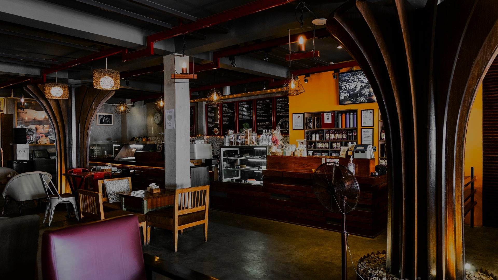

In 1999, we started off as the first specialty coffee shop in Nepal. Over the years, we have diversified from a small coffee shop to an enterprise franchising the Nepali Coffee brand, nationally and internationally.

since 1999
Since 1999, we’ve been proudly offering Nepali coffee, pioneering the concept of Specialty Coffee, Third Wave Coffee, and Sustainable Coffee in Nepal. Our unwavering mission has been to provide our customers with the finest coffee. Rooted in our commitment to socially responsible entrepreneurship, we prioritize investing in people, from coffee growers to coffee lovers.